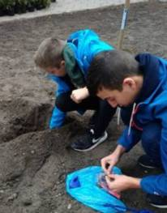
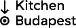

We are at the beginning of a climate crisis, and in the cities we are especially exposed to its effect. This is the heat-island effect, the temperature in the cities is 2-3 degrees higher than in the country. Perhaps the worst result of the heat island effect is the number of heat-related deaths. It leads to breathing difficulties and heart failures.
The trees can reduce the heat effect drastically. The temperature in urban areas is often 9 degrees warmer than in areas with heavy tree cover.
But the trees need water, especially at their young age. as long as the roots are established, they need weekly watering, even more often below 12 weeks. The trees are our guests in the cities, they help with our climate problems, so we need to help to supply them with water regularly.
We talked with the Capital Gardening Company, the Főkert and they said that they don’t have the capacity and resources to take care of all the trees.
We planted our sensors powered by an Arduino Uno with a capacitive soil moisture sensor in 2 building sites, Budapart and Budai Bolero, the device operated for 4 days, with four AAA batteries.
Our solution is a social application that notifies the members of the community of the water needs of trees. We plant a soil moisture sensor to each tree, so we are always up-to-date with the current percentage.
We implemented this with the help of Kitchen Budapest, the 5G research lab of Telekom, one of the largest telecommunication companies in Hungary. We send the data through the narrowband network. With this we are able to power the device for at least 6 months. The device send the data to the KiBu server, and we send the data to an AirTable, and our Android app, which was made with Thunkable. Afterwards we get the data, and update the user interface.
The cities are interested in our solution, as we understood from our discussion with Barcsa Lajos, the Vice Mayor of Debrecen and Tibor Déri, major of Újpest.
WWe created an Android application, powered by Thunkable, where the members of the society can see the suffering trees on a map, with the current soil moisture data of each tree, and can take action immediately. In the future we are planning to introduce badges and scoring system, and implement the application on IOS devices also.
We shared our project with our local community and Káposztási Családok Egyesülete, which is a community organization in our living area. Furthermore the leaders of the "10 million trees to Budapest" said that they would be happy to work with us, and proposed an integration into their current application.We had video calls with FLL team Hakuna Matata from Egypt, and Team Reflection from Turkey. They all liked our solution.